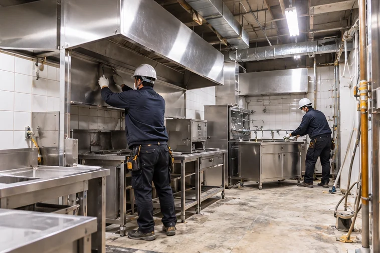
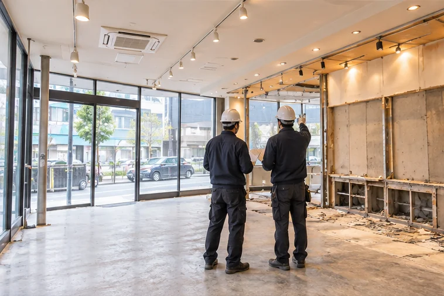
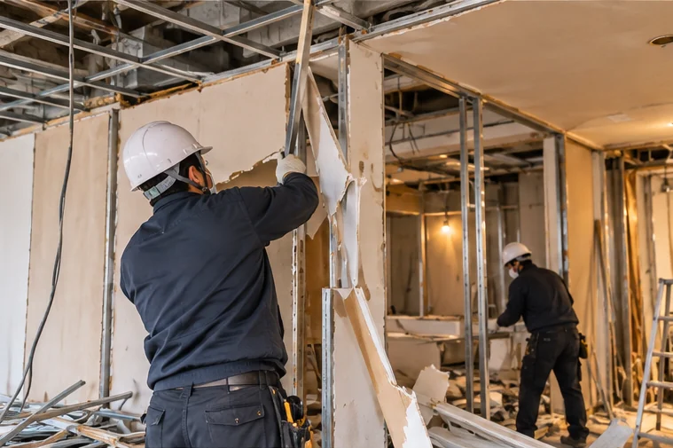
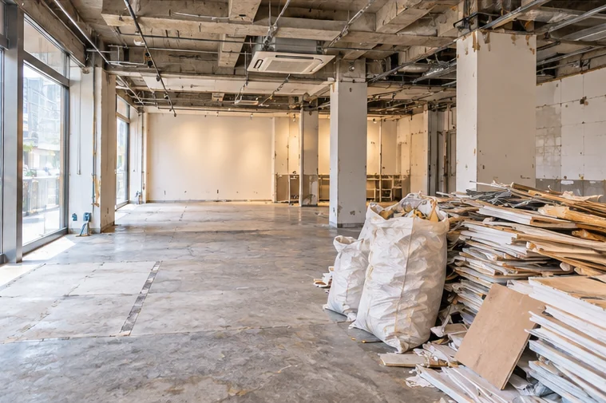
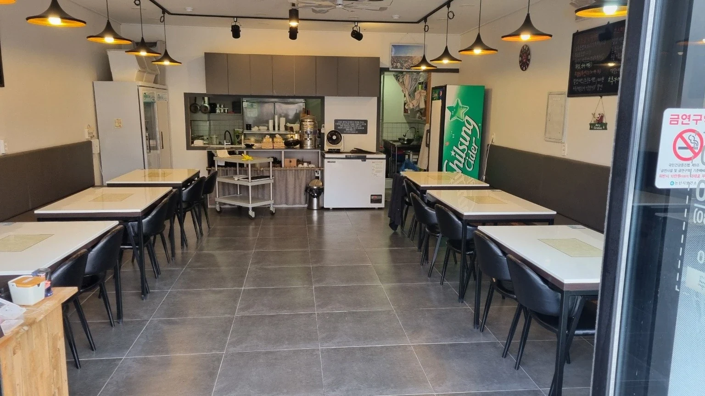
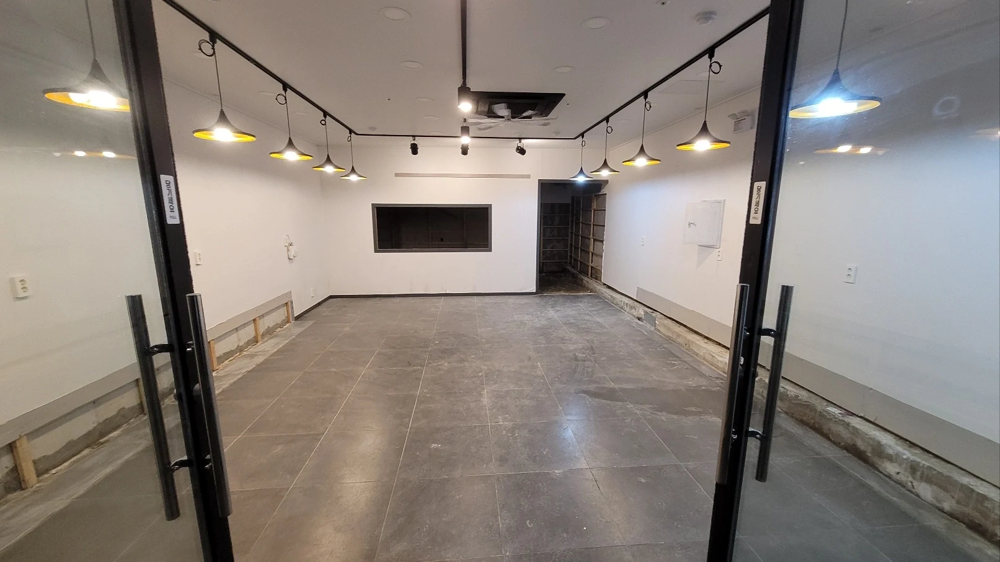
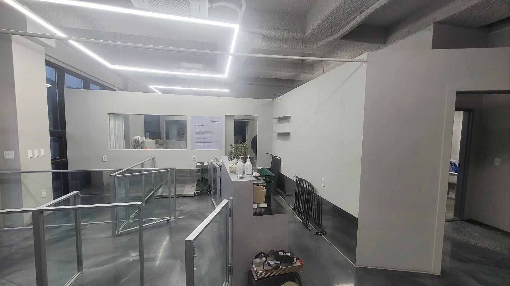
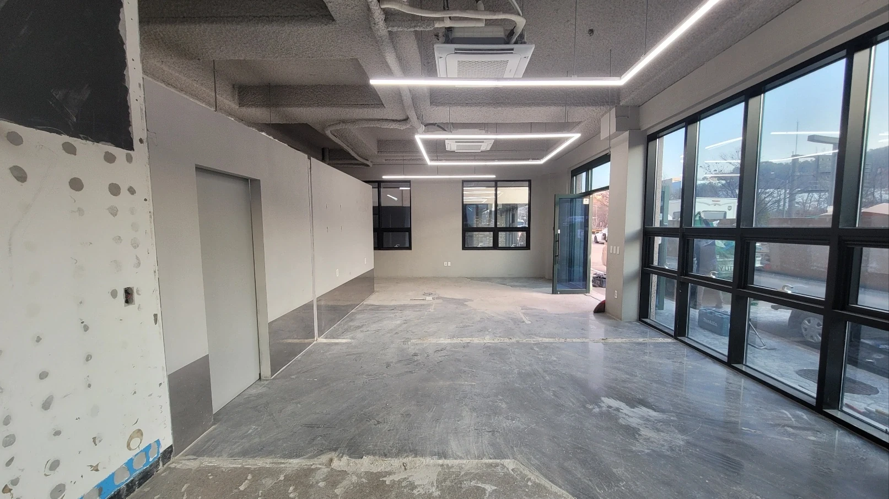

01 / FOOD & CAFE
음식점·카페의 주방 및 영업시설 철거
음식점과 카페는 홀 집기뿐 아니라 주방 내부의 후드, 배기 덕트, 조리대, 싱크대, 급배수 설비, 바닥 마감재 등이 철거 범위에 포함될 수 있습니다. 가스 및 전기설비는 안전조치와 별도 전문 작업이 필요한지 확인해야 합니다. 재사용할 집기와 제거할 시설을 구분해 상담하실 수 있습니다.
강북구에서 점포 폐업철거나 상가 원상복구를 준비하고 계신다면 철거 범위와 비용을 상담해 보세요. 수유동·미아동·번동·우이동 등 강북구 상업시설의 내부철거부터 폐기물 반출, 임대차 종료에 따른 원상복구 범위까지 사업장 상황에 맞춰 검토해 드립니다. 점포 면적과 철거 대상 시설, 반환 일정에 따라 필요한 공사와 견적을 구체적으로 상담하실 수 있습니다.

같은 강북구 상가라도 어떤 시설을 사용했는지에 따라 철거 내용이 달라집니다. 폐업이나 점포 반환을 앞둔 사업장의 기존 설비와 마감 상태를 확인하고 필요한 철거 및 원상복구 범위를 상담합니다.

음식점과 카페는 홀 집기뿐 아니라 주방 내부의 후드, 배기 덕트, 조리대, 싱크대, 급배수 설비, 바닥 마감재 등이 철거 범위에 포함될 수 있습니다. 가스 및 전기설비는 안전조치와 별도 전문 작업이 필요한지 확인해야 합니다. 재사용할 집기와 제거할 시설을 구분해 상담하실 수 있습니다.

학원은 강의실 칸막이와 출입문, 천장, 조명 등이 주요 검토 대상이며 사무실은 파티션, 유리벽, 바닥재, 전기 배선 정리 등이 필요할 수 있습니다. 의류매장이나 생활용품점 등 판매시설은 진열장, 계산대, 벽면 선반, 간판과 내부 인테리어 철거 범위를 확인합니다.
영업시설 전체를 철거해야 하는지, 일부 설비만 남겨야 하는지에 따라 작업량과 견적이 달라지므로 필요한 범위를 구분해 상담해 드립니다.
※ 위 서비스 사진은 이해를 돕기 위해 제작한 이미지이며 실제 시공 기록은 아래 전후 비교에서 확인하실 수 있습니다.
수유역과 미아사거리역 인근 상가, 번동의 생활밀착형 점포, 우이동의 상업시설은 실제 건물의 위치와 구조에 따라 작업 여건이 달라질 수 있습니다.
대로변 상가라면 폐기물 반출 차량의 정차 가능 여부를 확인해야 하고, 골목 안쪽 점포라면 차량 접근 거리와 자재 운반 방법을 검토해야 합니다. 여러 사업장이 함께 사용하는 건물은 공용 복도와 승강기 보호, 소음 발생 작업 시간, 관리주체의 공사 규정도 고려해야 합니다.
상담할 때 사업장 위치와 층수, 출입구 및 승강기 이용 조건을 알려주시면 공사 범위와 함께 반출 여건을 검토하는 데 도움이 됩니다.

폐업철거는 단순히 내부시설을 없애는 작업과 다릅니다. 임대차계약 종료 시점에 점포를 어떤 상태로 반환해야 하는지에 따라 필요한 공사 범위가 정해집니다.
기존 바닥과 천장을 유지할 수 있는지, 설치한 가벽이나 조명을 제거해야 하는지, 간판과 외부 시설까지 철거해야 하는지 등을 구분할 필요가 있습니다. 임대차계약서의 원상복구 조항과 임대인에게 확인받은 반환 조건이 있다면 상담 시 함께 전달해 주세요.
철거가 필요한 부분과 보존할 부분을 구분해 상담합니다. 기존 시설 상태나 임대인과의 협의 내용에 따라 원상복구 범위는 달라질 수 있습니다.
점포 철거 견적은 단순한 평당 금액보다 실제 공사 내용을 기준으로 살펴봐야 합니다. 같은 면적이라도 시설물의 종류와 폐기물 발생량, 반출 동선에 따라 비용 차이가 생길 수 있습니다.
상담하실 때는 점포 면적과 내부 사진, 제거해야 할 시설, 희망 공사일을 함께 알려주세요. 철거 항목과 폐기물 처리 범위를 나누어 검토하고 견적에 포함할 작업을 협의하실 수 있습니다.
폐업 일정이 정해졌다면 점포의 현재 상태와 임대차 종료일을 기준으로 상담을 시작하실 수 있습니다. 공사 범위에 따라 실제 진행 과정은 달라질 수 있습니다.
강북구 내 점포 주소, 업종, 면적, 내부 사진, 임대차 종료일 등을 전달해 주세요. 계약상 원상복구 조건이 있다면 함께 알려주시면 좋습니다.
제거할 시설과 보존할 시설, 폐기물 반출 조건을 확인하고 견적 산정에 필요한 사항을 상담합니다. 추가 현장 확인이 필요한 경우에는 가능한 일정과 방법을 협의합니다.
관리주체의 공사 규정과 점포 반환 일정을 고려해 작업 가능 조건을 검토합니다. 공사 완료 후 필요한 정리 및 원상복구 수준도 사전에 협의하는 것이 좋습니다.
철거 서비스 제공 업체는 다양한 상업시설의 철거와 원상복구 경험을 바탕으로 폐업을 앞둔 사업자의 공사 상담을 진행하고 있습니다.
위 수치는 철거 서비스 제공 업체의 전체 누적 홍보 실적이며 강북구만의 시공 실적을 의미하지 않습니다. 폐업철거와 원상복구를 함께 고민하고 계신다면 사업장 상황을 전달하고 필요한 공사를 상담해 보세요.
실제 시공 현장의 작업 전후 모습을 비교해 보실 수 있습니다. 사업장마다 철거 대상과 원상복구 조건이 다르므로 구체적인 작업 범위는 상담을 통해 확인해 주세요.

시공 전
시공 후
시공 전
시공 후네. 폐업신고 전이라도 철거가 필요한 시설과 점포 반환 일정을 기준으로 상담하실 수 있습니다. 영업 종료 예정일과 임대차계약 종료일을 알려주시면 일정 검토에 도움이 됩니다.
부분철거도 상담하실 수 있습니다. 바닥과 천장은 유지하고 가벽과 집기만 제거하는 경우처럼 남길 시설과 철거할 시설을 구분해 알려주세요. 실제 작업 가능 범위는 현장 상태에 따라 달라집니다.
네. 층수와 관계없이 점포 상황을 전달해 상담하실 수 있습니다. 다만 승강기 이용 가능 여부, 계단 폭, 폐기물 운반 거리 등에 따라 작업 방식과 비용이 달라질 수 있습니다.
2026년 희망리턴패키지 점포철거비 지원 신규 신청은 10월 21일 오후 6시에 마감되었습니다. 이후 추가 모집이나 다음 연도 지원 여부는 소상공인시장진흥공단의 새로운 공식 공고를 확인해야 합니다. 이곳의 철거 상담과 정부지원사업의 신청·심사·지급은 별개이며 지원금 지급을 보장하지 않습니다.
점포의 면적과 철거 대상, 작업 가능 시간, 희망 완료일을 알려주세요. 현장 여건과 일정에 따라 가능한 작업 범위를 검토할 수 있으며, 구체적인 착공 및 완료 일정은 별도 협의가 필요합니다.
강북구에서 점포를 정리할 계획이라면 철거 범위와 반환 조건부터 구체적으로 상담해 보세요. 기존 내부시설, 폐기물 처리, 원상복구 필요 여부, 공사 일정 등을 고려해 필요한 작업을 검토할 수 있도록 안내합니다.
수유동·미아동·번동·우이동 등 강북구 사업장의 위치와 내부 사진, 희망 공사일을 전달해 주시면 상담에 필요한 내용을 확인하실 수 있습니다.
폐업 이후 점포 반환까지 고려한 철거 상담을 시작하세요.